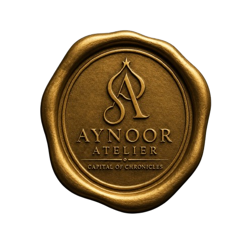

Aynoor Atelier governs the custodial transfer of cultural assets through Private Treaty.
We do not acquire history.
We preserve its continuity.
Capital of Chronicles
Custody before acquisition.
Endurance before ownership.
Aynoor Atelier governs the custodial transfer of cultural assets through Private Treaty.
We do not acquire history.
We preserve its continuity.

Not projects. Categories.
Institutional Provenance
Custodial Governance
Collection Documentation
Private Treaty Advisory
Chronicle Architecture
Legacy Stewardship
Latest Newsletter
Quotations
Medium Article
LinkedIn Article
History survives because someone refused to let the record break.
— Aynoor Atelier